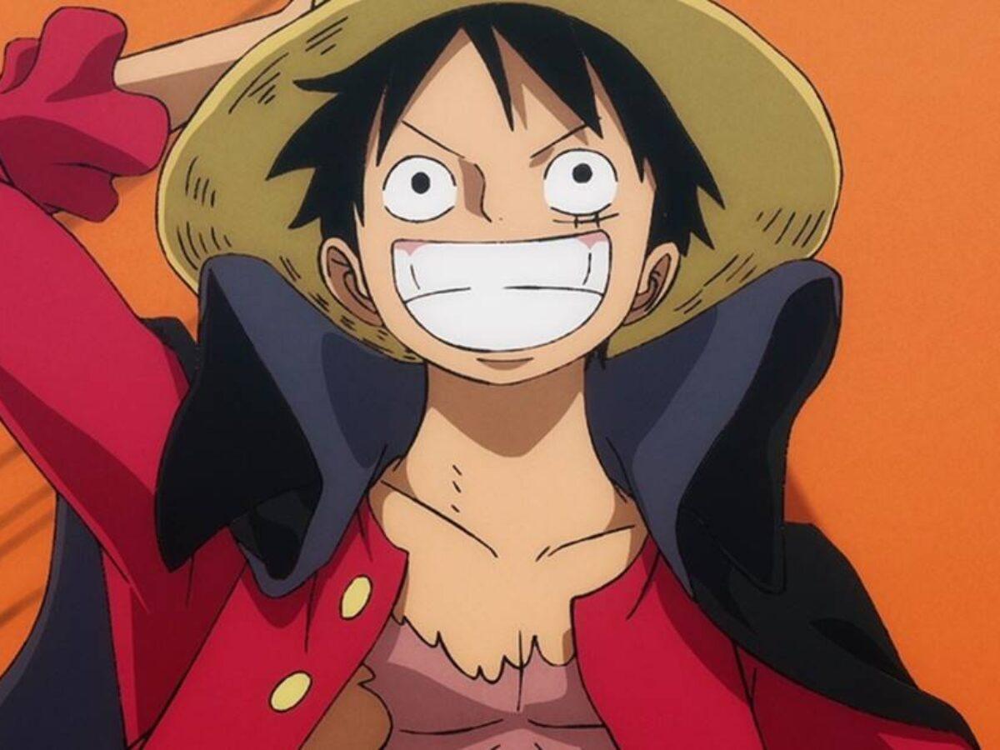

Monkey D. Luffy , também conhecido como "Chapéu de Palha Luffy"é o principal protagonista do mangá e anime , One Piece . Ele é o fundador e capitão dos cada vez mais infames e poderosos Piratas do Chapéu de Palha , bem como um de seus melhores lutadores. Ele deseja encontrar o lendário tesouro One Piece e assim se tornar o Rei dos Piratas. Luffy acidentalmente comeu a Gomu Gomu no Mi aos 7 anos, o que transformou seu corpo em borracha.

Roronoa Zoro, também conhecido como "Caçador de Piratas" Zoro, ele é o segundo membro da tripulação de Luffy e o primeiro a se juntar a ela. Como um mestre do estilo de três espadas, um estilo de esgrima que ele criou durante seu treinamento de infância na Vila Shimotsuki , Zoro está entre os três combatentes mais poderosos dos Chapéus de Palha, ao lado de Luffy e Sanji. Seu sonho é se tornar o maior espadachim do mundo, a fim de honrar uma promessa que fez a seu falecido amigo de infância Kuina .

"Perna Preta" Sanji, nascido como Vinsmoke Sanji, é o cozinheiro dos Piratas do Chapéu de Palha e um dos Oficiais Superiores da Grande Frota do Chapéu de Palha. Ele é o quinto membro da tripulação e o quarto a entrar, fazendo isso no final do Arco Baratie .Seu sonho é encontrar o suposto paraíso do chef, All Blue , que é onde East Blue , West Blue , North Blue e South Blue se encontram, junto com sua vida selvagem. Ele é um dos três melhores lutadores dos Chapéus de Palha, ao lado de Luffy e Zoro .

"Gatuna" Nami é o navegador dos Piratas do Chapéu de Palha e um dos Oficiais Seniores da Grande Frota do Chapéu de Palha. Ela é o terceiro membro da tripulação e o segundo a entrar.Ela era anteriormente um membro dos Piratas de Arlong e inicialmente se juntou aos Chapéus de Palha para que pudesse roubá-los para comprar de volta sua aldeia de Arlong .Seu sonho é fazer um mapa do mundo inteiro .

"Deus" Usopp é o atirador dos Piratas do Chapéu de Palha e um dos Oficiais Superiores da Grande Frota do Chapéu de Palha. Ele é o quarto membro da tripulação e o terceiro a se juntar, fazendo isso no final do Arco Syrup Village . Embora tenha deixado a tripulação durante o Arco Water 7, ele voltou a se juntar no final do Arco Post-Enies Lobby. Usopp sonha em se tornar um bravo guerreiro do mar assim como seu pai e vive todos os dias em busca de realizar esse sonho.

Tony Tony Chopper, também conhecido como "Amante de Algodão Doce" Chopper, é o médico dos Piratas do Chapéu de Palha e um dos Oficiais Superiores da Grande Frota do Chapéu de Palha. Ele é o sexto membro da tripulação e o quinto a se juntar, fazendo isso no final do Arco da Ilha de Drum.Chopper é uma rena que comeu a Hito Hito no Mi, uma Akuma no Mi que permite ao seu usuário se transformar em um híbrido humano ou humano à vontade. Ele veio da Ilha Drum e foi ensinado a ser médico por suas duas figuras paternas, os doutores Hiriluk e Kureha. Seu sonho é um dia se tornar um médico capaz de curar qualquer doença e quer viajar o mundo todo justamente na esperança de realizar esse sonho.

Nico Robin, também conhecida por seu epíteto "Criança Demônio" e "Luz da Revolução", é a arqueóloga dos Piratas do Chapéu de Palha e uma das Oficiais Seniores da Grande Frota do Chapéu de Palha. Ela é o sétimo membro da tripulação e o sexto a se juntar, fazendo isso no final do Arco Arabasta . Ela deixou temporariamente a tripulação durante o Arco Water 7 , mas voltou durante o Arco Enies Lobby. Robin comeu a Hana Hana no Mi, dando a ela o poder de reproduzir partes de seu corpo (ou todo o corpo) em qualquer superfície à vontade. Como a única sobrevivente da ilha destruída de West Blue Ohara , ela é atualmente uma das duas únicas pessoas no mundo conhecidas por ter a habilidade de ler e decifrar Poneglyphs , uma habilidade que é considerada proibida e ameaçadora para o Governo Mundial .

" Homem de Ferro " Franky é o construtor naval dos Piratas do Chapéu de Palha e um dos Oficiais Superiores da Grande Frota do Chapéu de Palha. Ele é o oitavo membro da tripulação e o sétimo a entrar, fazendo isso no final do Arco Post-Enies Lobby. Nascido "Cutty Flam", ele escolheu usar o apelido de "Franky" até eventualmente descartar permanentemente seu nome verdadeiro a pedido de Iceburg para esconder sua identidade. O sonho de Franky é criar um navio e navegar o mundo com ele, ele também construiu o Thousand Sunny segundo navio dos Chapéus de Palha e se juntou a eles para juntos realizar seu sonho.

" Soul King " Brook é o músico dos Piratas do Chapéu de Palha , um de seus dois espadachins e um dos Oficiais Seniores da Grande Frota do Chapéu de Palha. Ele é o nono membro da tripulação e o oitavo a se juntar, fazendo isso no final do Arco Thriller Bark . Brook comeu a Yomi Yomi no Mi, o que lhe permitiu voltar à vida após a morte uma vez. Brook finalmente aprendeu a explorar mais profundamente os poderes de sua Akuma no Mi, dando-lhe um controle significativo sobre sua própria alma e as almas dos outros. Originalmente um membro dos Piratas Rumbar , ele morreu e ressuscitou através do poder da Yomi Yomi no Mi. No entanto, devido ao tempo que sua alma levou para encontrar seu corpo, ela foi reduzida a um esqueleto, mantendo apenas seu cabelo afro intacto. Brook vagou sozinho no Florian Triangle por 50 anos, finalmente encontrando Luffy e servindo como aliado dos Chapéus de Palha.